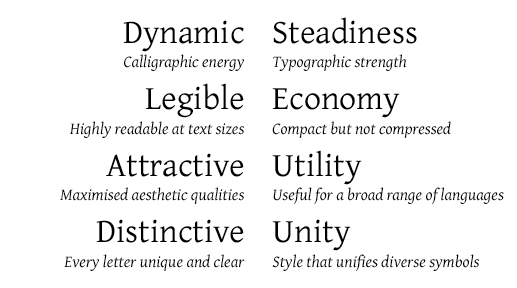

Gentium - Design
Gentium is a typeface family designed to enable the diverse ethnic groups around the world who use the Latin, Cyrillic, and Greek scripts to produce readable, high-quality publications. It supports a wide range of Latin- and Cyrillic-based alphabets.
The design is intended to be highly readable, reasonably compact, and visually attractive. The additional ‘extended’ Latin letters are designed to naturally harmonize with the traditional 26 ones. Diacritics are treated with careful thought and attention to their use. Gentium Plus also supports both polytonic and monotonic Greek.
Type Samples
For a complete list of characters included in Gentium, see Character Set Support.
Gentium has been designed to balance the need for a compact, legible typeface with the need for an attractive, friendly one. The overall tensions that influenced the design are summarized by the following table:
For full details on the unique design characteristics of Gentium, download the 20-page type specimen: Gentium Type Specimen (A5 format). This publication was prepared for the University of Reading and was distributed to all attendees of the ATypI conference in Rome, September 2002. It also includes examples of the glyph set supported by Gentium and shows it in use for a variety of settings (Regular/Italic, Latin/Greek, Prose/Poetry, Display/Text).
An exhaustive set of proof sheets is also available that shows the complete glyph inventory of each font in a range of sizes: Gentium Proofs (A3 format).
A document showing Polytonic, Monotonic and mixed Latin with Greek is demonstrated in the following specimen: Gentium Greek Specimen.
SIL International is the creator of the Gentium fonts, and is the owner of all proprietary rights therein.
Gentium is a trademark of SIL International.